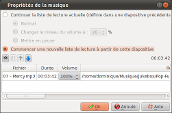

Introduction
La boite "Propriétés de
la musique" permet de régler la piste musicale :

Cette boite est appelée en double cliquant sur la zone
musique des diapositives depuis la barre de temps de la
fenêtre principale
.
Description de la boite de dialogue
La partie haute de la boite
Principe de fonctionnement
Le principe général de fonctionnement de la piste
musical est que tant que vous ne changez pas les
réglages, les réglages précédents
s'appliquent.
Ainsi, si :
- La diapositive 1 - Définie une liste de lecture
- La diapositive 2 - Ne contient aucun réglage de musique
- La diapositive 3 - Ne contient aucun réglage de musique
- La diapositive 4 - Définie une liste de lecture
- La diapositive 5 - Ne contient aucun réglage de musique
Alors :
- Les diapositive 2 et 3 continuent de jouer la liste de
lecture définie dans la diapositive 1
- La diapositive 5 continue de jouer la liste de lecture
définie dans la diapositive 4
Les réglages de la piste musical
| Continuer la liste de
lecture actuelle |
Permet de continuer
à jouer la liste de lecture définie dans une
diapositive précédente :
| Normal |
Aucun
réglage particulier
|
Changer le
niveau de volume
|
Permet
d'indiquer qu'à partir de maintenant, le
volume sonore est réduit.
Cette option est particulièrement utile,
par exemple, pour réduire le son de la
musique pendant le passage d'une vidéo.
Note : Cette réduction de volume ne dure
que le temps de la diapositive.
|
Mettre en pause
|
Permet de
mettre en pause la liste de lecture.
Note : Cette pause ne dure que le temps de la
diapositive.
|
|
Commencer une nouvelle
liste de lecture
|
Permet de commencer une
nouvelle liste de lecture.
Si une liste définie dans une diapositive
précédente, est en cours de lecture, la liste
précédente est arrêté avec un effet
de fade-out (baisse progressive du volume sonore
jusqu'à arrêt complet).
|
La liste de lecture (partie basse de la boite)
La liste de lecture est
composée de deux parties :
- La barre d'outils contenant les contrôles de la
liste de lecture
- La liste des fichiers musicaux composant la liste de
lecture
La barre d'outils

|
Permet d'ajouter un
fichier musical à la liste de lecture.
Une boite de sélection de fichier apparaît
vous permettant de sélectionner un fichier.
|

|
Permet de supprimer le
fichier musical actuellement sélectionné
dans la liste.
|

|
Permet de changer
l'ordre dans lequel seront joués les fichiers
musicaux.
Déplace le fichier actuellement
sélectionné dans la liste d'un cran vers le
haut.
|

|
Permet de changer
l'ordre dans lequel seront joués les fichiers
musicaux.
Déplace le fichier actuellement
sélectionné dans la liste d'un cran vers le
base. |
La liste des fichiers musicaux
Les fichiers musicaux sont listés dans l'ordre dans
lequel ils seront joués, du haut vers le bas.
La colonne Volume permet de définir le "Master Volume"
pour le fichier. Ce volume est indépendant des
éventuels réductions de volume que vous
définissez dans la partie haute de la boite.
Remarque
Les effets de fade/in fade/out et
les augmentations/réductions de volume ont lieux pendant
les transitions entrantes des diapositives.
Par conséquent :
- Ils durent le temps des transitions entrantes.
- Si une diapositive a une transition entrante
réglée sur Aucun, l'effet sonore n'est pas
progressif mais instantané.
Voir aussi
ffDiaporama 1.0 - Juillet
2011
 Régler la
piste musicale
Régler la
piste musicale